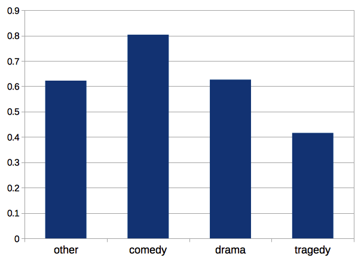
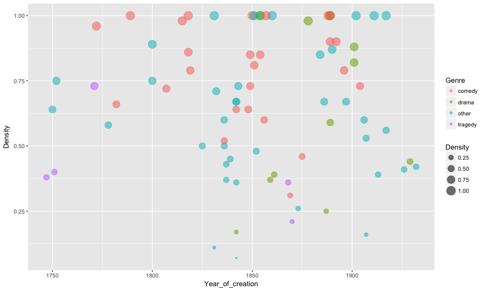

RUSDRACOR
A CORPUS FOR THE QUANTITATIVE RESEARCH OF RUSSIAN DRAMA
Daniil Skorinkin, Frank Fischer, German Palchikov
+ Eugenia Ustinova & Daria Maximova
Short link to THIS presentation
Who we are
- Centre for Digital Humanities at HSE University: hum.hse.ru/digital
- Junior research group (Научно-учебная группа) on Digital Literary Studies: hum.hse.ru/digital/rusdracor
What we do
rus.dracor.org
Objective
- grow and maintain a corpus of Russian-language drama from around 1740 to around 1940
- Main goal: a large-scale social network analysis of literary (dramatic) texts
- ... and other types of formal quantitative analysis of drama
Network analysis of literature
is it a thing?
One of the first computable literary networks
Donald Knuth. Stanford GraphBase (1994)

Simple Stories
Schweizer T., Schnegg M. Die soziale Struktur der. „Simple Storys“: Eine Netzwerkanalyse. (1998)

The Marvel Universe
First large-scale research

The Marvel Universe
..and many others followed
- James Stiller, Daniel Nettle, and Robin I. M. Dunbar (2003) The Small World of Shakespeare’s Plays.Human Nature 14(4):397---408.
- “Weak Links and Scene Cliques Within the Small World of Shakespeare,” Journal of Cultural and Evolutionary Psychology 3, no. 1 (2005)
- Elson, D. K., Dames, N. and McKeown, K. (2010), Extracting Social Networks from Literary Fiction, Proceedings of ACL 2010, Uppsala, Sweden.
- J. Rydberg-Cox. Social Networks and the Language of Greek Tragedy. Journal of the Chicago Colloquium on Digital Humanities and Computer Science, 1(3):11, 2011.
- Agarwal A., Corvalan A., Jensen J., Rambow O. (2012), Social network analysis of Alice in Wonderland. Proceedings of the NAACL HLT 2012 Workshop on Computational Linguistics for Literature, pages 88–96, Montreal, Canada.
'Reinvention' of Literary Networks by Moretti
Though Horatio is an old fixation of mine, I had never fully understood his role in Hamlet until I looked at the play’s network structure.
Franco Moretti. “Distant Reading”
'Reinvention' of Literary Networks by Moretti

“Networks are made of vertices and edges; plot networks, of characters and verbal exchanges. In plays this works well, because words are deeds, deeds are almost always words, and so, basically, a network of speech acts is a network of actions”.
Franco Moretti. “Distant Reading”
АКТ I
СЦЕНА 1
Эльсинор. Площадка перед замком. Франсиско на страже. Входит Бернардо,
Бернардо
Кто здесь?
Франсиско
Нет, сам ответь мне; стой и объявись.
<head>АКТ I</head>
<div type="scene"><head>СЦЕНА 1</head>
<stage>Эльсинор. Площадка перед замком. Франсиско на страже. Входит Бернардо,</stage>
<speaker>Бернардо</speaker>
Кто здесь?
<speaker>Франсиско</speaker>
Нет, сам ответь мне; стой и объявись.
Dramatic text
= easy target for network formalisation
= easier to automate & scale up corpus markup!
We Make These Actions (and Networks) Machine-Readable with:

Text Encoding Initiative (TEI/XML)
German Corpus: 465 plays

Densities of German plays

And now on Russian data!

Mean Density in Russian Drama
by Genre
Densities / Years scatterplot
Colored by Genre
Which plays have 'small world' property?

Which plays have 'small world' property?

Zooming in on Boris Godunov

Same as Goethe — too much Shakespeare!

Classicism vs 'Shakespearean plays' in Russian Corpus


Gavrila Pushkin — is he important?

Node&label size = Node Degree
Gavrila the messenger

Node&label size = Betweenness Centrality
Catching other hidden figures with network measures
Bityagovsky (double agent)

Bitkov (spy on Pushkin)

Shiny RusDraCor for Online Network Analysis

Evolution of stage directions
Эволюция сценических ремарок и "эпосизация" драмы
Example of Stage Directions
<stage>Слуги уходят.</stage>
<stage>(Подходит к столу; ему дают место.)</stage>
<stage>Грохот, взрыв, выстрел. Победоносиков распахивает дверь и бросается в квартиру. На нижней площадке фейерверочный огонь. На месте поставленного аппарата светящаяся женщина со свитком в светящихся буквах. Горит слово "Мандат". Общее остолбенение. Выскакивает Оптимистенко, на ходу подтягивает брюки, в ночных туфлях на босы ноги, вооружен. </stage>
Stage directions, quite literally, don’t count.
Eric Rasmussen
Example of Stage Directions
<stage>Слуги уходят.</stage>
<stage>(Подходит к столу; ему дают место.)</stage>
<stage>Грохот, взрыв, выстрел. Победоносиков распахивает дверь и бросается в квартиру. На нижней площадке фейерверочный огонь. На месте поставленного аппарата светящаяся женщина со свитком в светящихся буквах. Горит слово "Мандат". Общее остолбенение. Выскакивает Оптимистенко, на ходу подтягивает брюки, в ночных туфлях на босы ноги, вооружен. </stage>
Share of stage directions

Verb usage in stage directions

Parts of Speech

(by Dasha Maximova)
FICTIONAL GENDER LANGUAGE STUDIES
<person xml:id="ZhenaLukiLukicha" sex="FEMALE">
<persName>Жена Луки Лукича</persName>
</person>
<person xml:id="Derzhimorda" sex="MALE">
<persName>Держиморда</persName>
</person>
<person xml:id="Hlestakov" sex="MALE">
<persName>Хлестаков</persName>
</person>
<person xml:id="UnterOfitsersha" sex="FEMALE">
<persName>Унтер-офицерша</persName>
</person>
<person xml:id="Korobkin" sex="MALE">
<persName>Коробкин</persName>
</person>
FICTIONAL GENDER LANGUAGE STUDIES

FEEL FREE TO COME AND HELP
github.com/dracor-org/rusdracor